Termice
 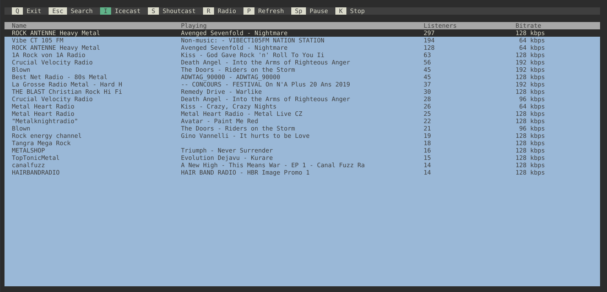
Terminal application with an ineteractable TUI to listen to net radio.
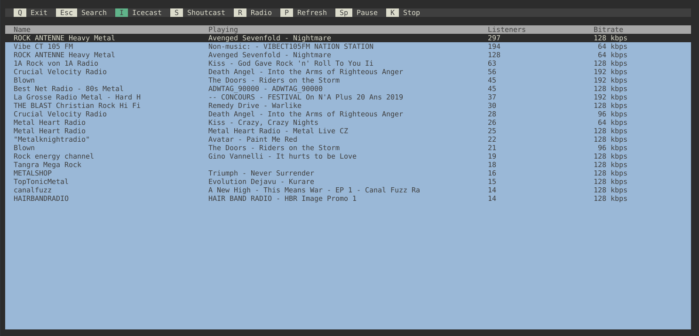
Terminal application with an ineteractable TUI to listen to net radio.
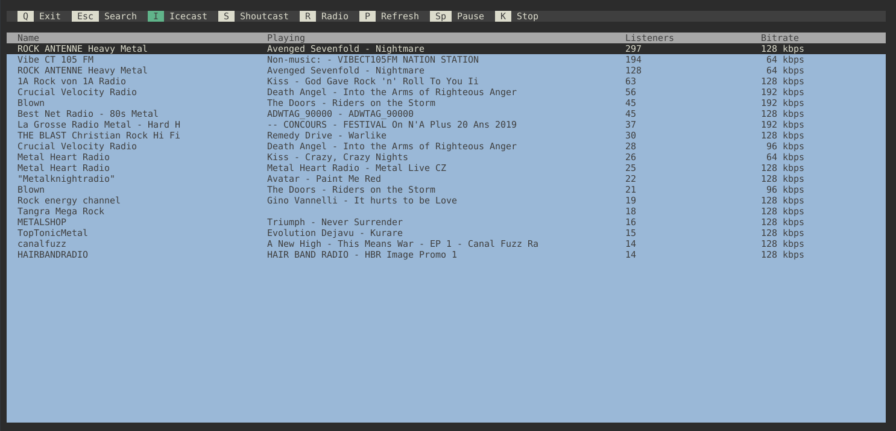
Terminal application with an ineteractable TUI to listen to net radio.
tripperjs
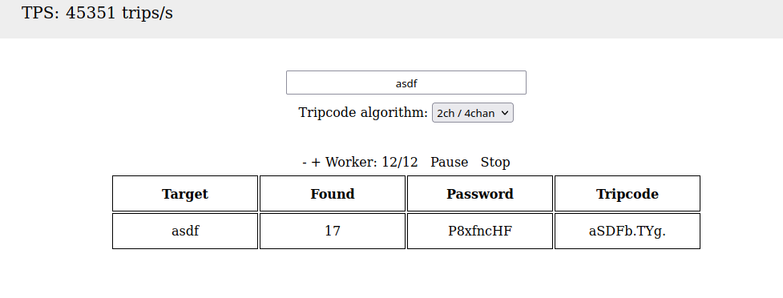
Implementation of the 2ch tripcode algorithm through 3DES on Javascript.
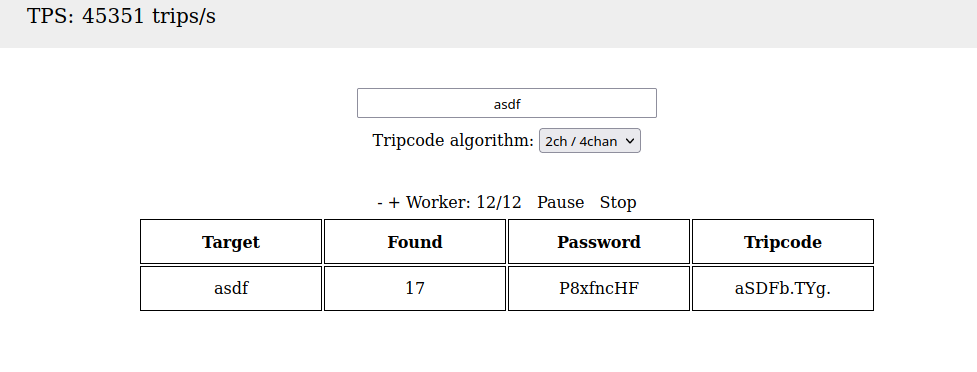
Implementation of the 2ch tripcode algorithm through 3DES on Javascript.
dekku
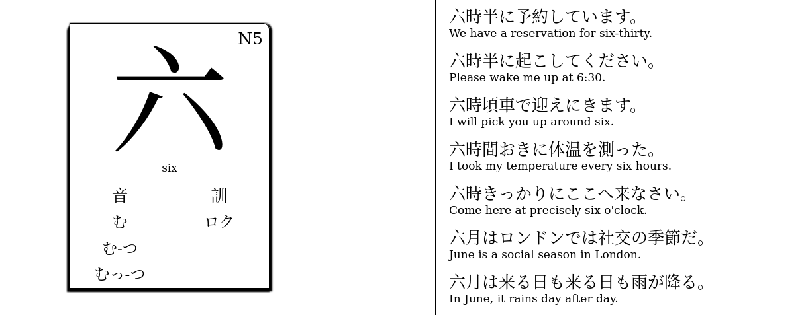
Simple React JLPT flipcards with examples from jisho.org.
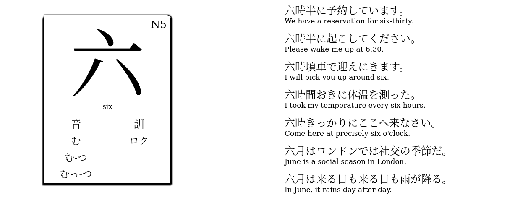
Simple React JLPT flipcards with examples from jisho.org.
Pastebin Codemirror Editor
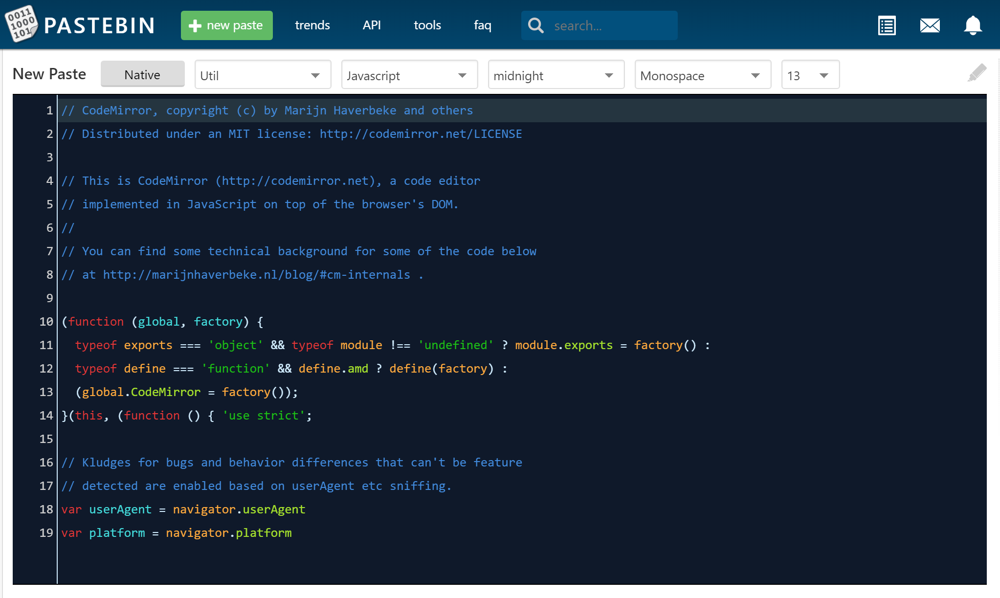
Codemirror edifor for Pastebin with syntax highlight and night mode
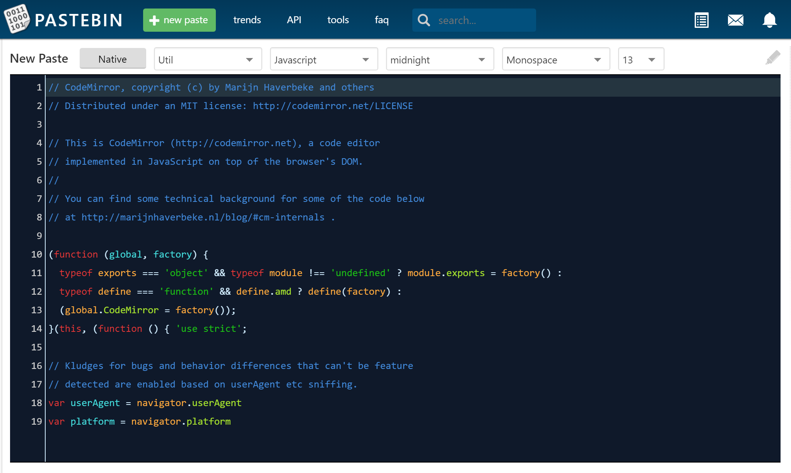
Codemirror edifor for Pastebin with syntax highlight and night mode
Webtorrent TUI
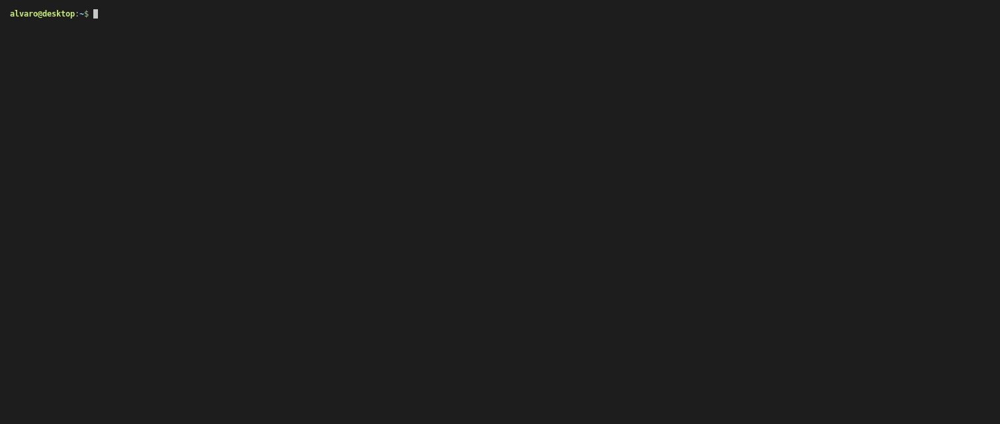
Simple TUI for the webtorrent terminal client.
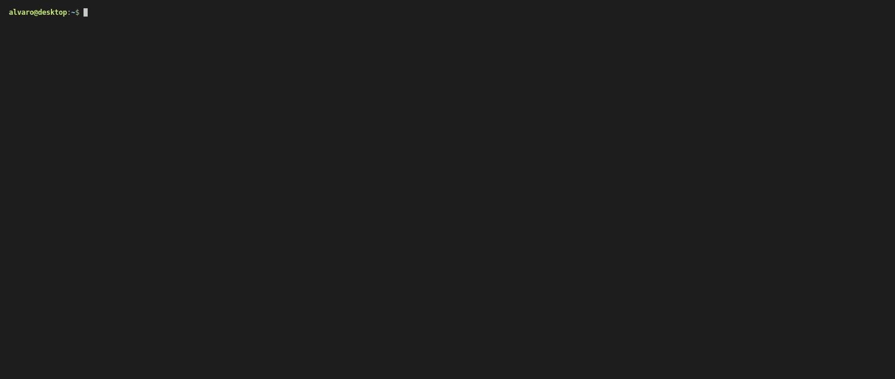
Simple TUI for the webtorrent terminal client.
Remote backup utility
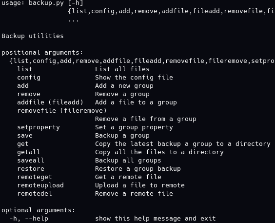
Small and simple backup utility that supports local and remote storage providers.
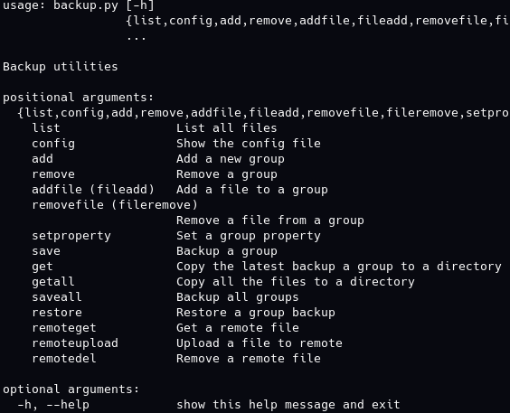
Small and simple backup utility that supports local and remote storage providers.
CHIP8 Emulator
Small interpreter and emulator for CHIP8.
Small interpreter and emulator for CHIP8.
Gameboy Emulator
Small, cycle-accurate gameboy emulator written in Rust.
Small, cycle-accurate gameboy emulator written in Rust.